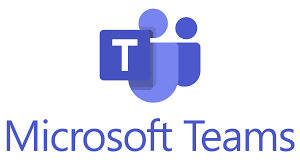
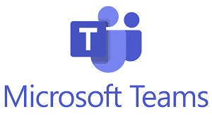

Tools
At the commencement of this assignment we were all only just becoming familiar with GitHub. We had all successfully learned enough to launch our own websites for Assignment 1. Now we were thrust into the position of collaborating together on a team website.
We assigned an initial role of web developer to Anthony, who set about building the basic structure of the website. In the first week we practiced pushing our own content to this site so that we could experience the collaborative process. We immediately encountered problems with conflicts when pulling and pushing. This was alarming and gave us doubts as to how well the process would work. We had serious worries that we could potentially destroy or overwrite other’s work. We put an immediate halt on GitHub submissions while we performed troubleshooting, and realised the conflicts were a result of work performed that was not immediately pushed. In the interim another collaborator had pushed work and so there were now synchronisation issues.
We agreed on a new process, of always pulling before beginning work, and posting in a specific MS Teams chat once a push had been made, to alert the group of new content and remind of the need to pull.
This workflow proceeded smoothly for two weeks, but as more of us started to work on the website we realised there was more potential for conflict. With our current system, if two people were working concurrently on the same section of the website, then we could run into the same problems as before. We devised a new workflow where a chat announcement would be made whenever someone was working on the site, informing other members of which section. It was also agreed that no more than 30 minutes of work should be performed before pushing to the site, with an accompanying push announcement to MS Teams.
We had contributions to the site from all team members, and more confident members were active in modifying the website design, CSS and error correction. This took the pressure off any one particular member, and we found that whenever we pulled content to our local device, the group website was steadily coming together with extensive content and a visually appealing presentation.
We were all conscious of labelling our pushes to outline the changes made, and we found we were easily able to decipher the audit trail on GitHub. For peace of mind we also established a routine daily 6pm backup to one local computer as an additional failsafe.
We are keen to investigate the process and benefits of branching for Assignment 3, as we have all grown in confidence using GitHub browser and desktop interfaces, as well as Atom text editor and its associated Git plugin.
We were all relatively new to the MS Teams environment as well, but quickly mastered its utility. We had twice weekly meetings that were very productive in allocating workloads, troubleshooting problems, and pushing for deadlines. In between meetings we had several active chat threads in MS teams, asking questions, giving progress updates and brainstorming ideas. Each meeting was preceded with an agenda and followed by action notes. This meant meetings were efficient and most outcomes were met on or close to deadlines.
Documents were uploaded to MS Teams for review, and where collaboration was required on a single document, multiple members were able to edit and save dynamically.
Overall despite unfamiliarity and a few early problems, our team used the group work tools very effectively to collaborate together on producing this assignment.
Workflow From - 21.9.21
Workflow From - 23.9.21
Workflow From - 27.9.21
Workflow From - 30.9.21
Workflow From - 4.10.21
Workflow From - 7.10.21
Workflow From - 11.10.21
 
